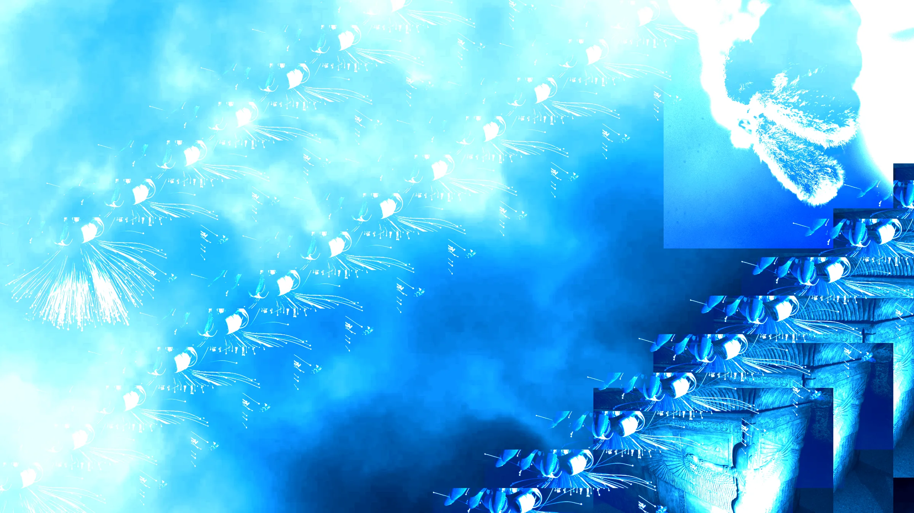
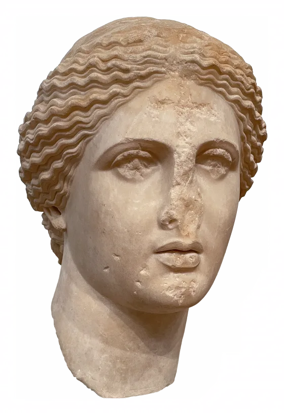

La página solo compone piezas compartidas de iroFactory, sin dependencias externas más allá de las fuentes. El fondo combina columnas generadas en SVG, dos shaders en WebGL crudo (sin Three.js) y una fotografía que se reordena en tiras para formar cada columna.
El tema alterna entre paleta clara y oscura. Ambas reconstruyen el fondo completo · degradado, columnas y tipografía · a partir de los mismos tokens de color que se listan más abajo.
«Ningún color puro #000 o #fff en ningún token · hasta el negro y el blanco de este tema son un matiz.» Regla de diseño de iroFactory

Cuatro vistas del mismo tema
# Ejemplo de resaltado class Config: def describir(self): return f"{self.tema}"
La paleta nace de dos referencias: mármol claro, mar profundo.
La paleta parte de dos referencias concretas: mármol claro y un azul profundo de mar. De ahí salen los nombres de los tokens, no al revés · la idea vino primero de qué colores se veían bien juntos, la referencia clásica se sumó después.
La portada usa fragmentos de una sola fotografía reordenados en tiras, en vez de una imagen o un degradado continuo, para que el fondo tenga textura sin depender de una imagen externa pesada.
Sin Three.js · WebGL crudo para Light Rays y Ripple Distortion, SVG procedural para columnas y estrías. El toggle de tema no cambia una imagen por otra al azar: reconstruye el fondo entero, gradiente incluido, desde los mismos tokens que colorean cada swatch de abajo.
Una serif de lectura larga para el cuerpo, una serif más geométrica y en mayúsculas para títulos. Ningún color puro #000 o #fff en ningún token.
Mármol, oro y azul Egeo · El Mediterráneo en dos luces.
| Token | Día | Atardecer | Evocación |
|---|---|---|---|
--gold | #C8900A | #E8A820 | Oro · el sol · Apolo |
--aegean | #0F4FA8 | #DA5B24 | Egeo · el mar · Poseidón |
--marble | #F8F4EC | #E8D8B8 | Mármol · los templos |
--olive | #607830 | #405820 | Olivo · Atenea |
--rose | #E87080 | #D06070 | Rosa · Afrodita · pétalos |
--yellow | #F0C840 | #E0A820 | Amarillo · flores del campo |
Un trazo de oro para lo que no debería pasar desapercibido.
Confirmado, sin complicaciones.
El plazo se acerca, todavía hay tiempo.
Una acción que no tiene vuelta atrás.
Un aviso que llega desde otra parte del sistema.
Contexto de fondo, nada que resolver ahora.
Un matiz suave, más decorativo que urgente.
Neutro por diseño, la base sobre la que va todo lo demás.
Poema épico griego · c. siglo VIII a.C.
Poema épico griego · secuela de la Ilíada.
# Ejemplo de resaltado de sintaxis class Config: def __init__(self, tema): self.tema = tema self.activo = True def describir(self): return f"Tema activo: {self.tema}" config = Config("apolo") print(config.describir())
La paleta nace de dos referencias: mármol claro, mar profundo.
Cada columna muestra una tira distinta de la misma fotografía.
El tema completo se reconstruye al alternar claro y oscuro.
El contraste del texto viene del fondo, no de un borde alrededor.
Hasta el negro y el blanco de esta paleta son un matiz.
Este párrafo entra desde la derecha.
Este retrocede, entra desde la izquierda.
Y este se queda quieto, sin desplazarse.
Árbol de archivos, dependencias reales entre ellos, y clases/métodos de iroFactory completo, generado con Ariadne directamente del código de este repositorio. Arrastra para moverte, gira la rueda para acercar, haz clic en un nodo para ver su detalle.